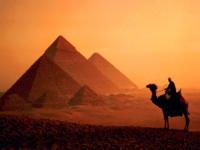
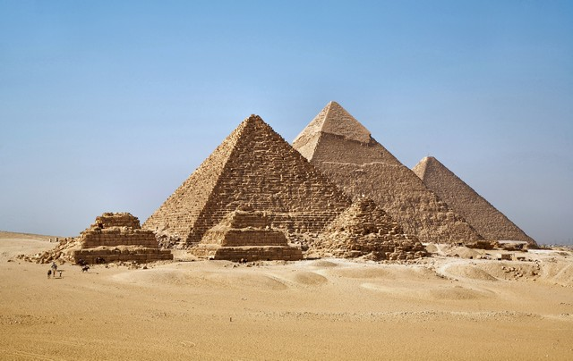
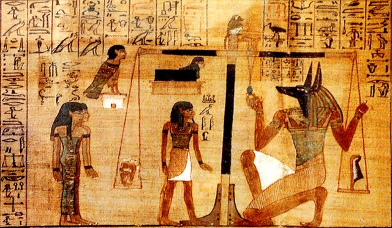
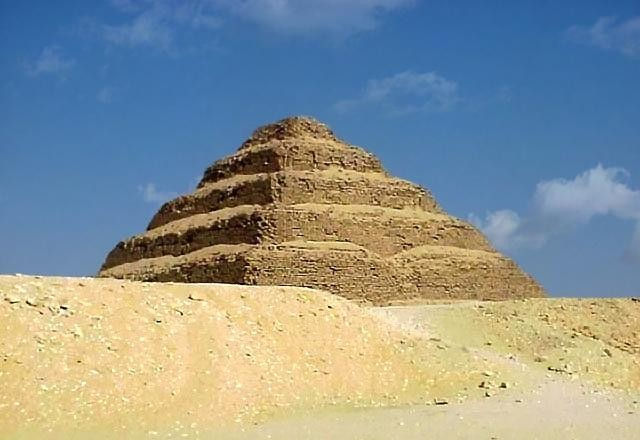
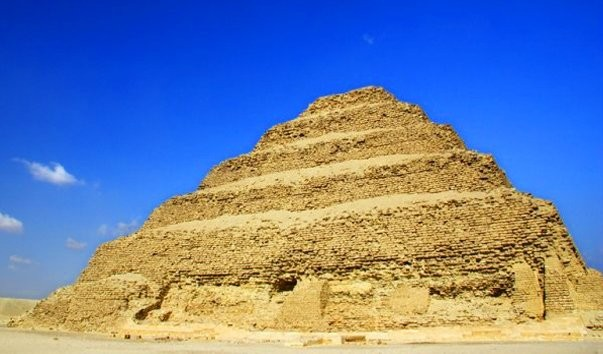
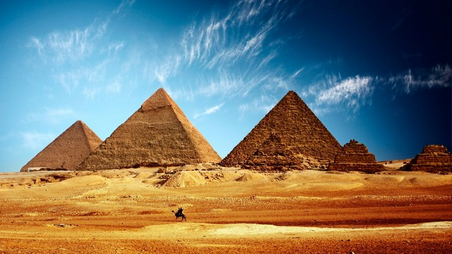
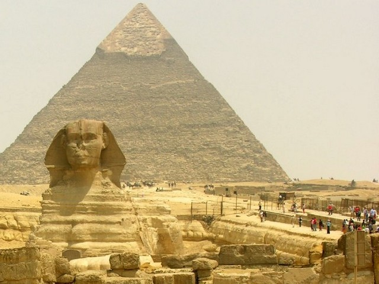
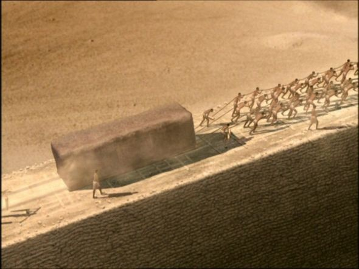
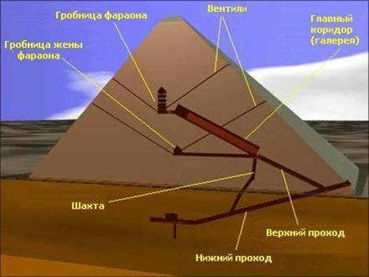

Перше чудо світу всіх часів, одне з головних споруд нашої планети, місце повне таємниць і загадок, точка постійного паломництва туристів - єгипетські піраміди і зокрема піраміда Хеопса.
Будівництво гігантських пірамід, звичайно ж, було справою далеко не з легких. Величезні зусилля великої кількості людей було докладено для того, щоб доставити кам'яні блоки на плато Гіза або Саккара, а пізніше і в Долину царів, що стала новим некрополем фараонів.

На даний момент налічується близько сотні знайдених пірамід в Єгипті, але знахідки тривають, і їх число постійно збільшується. В різні часи під одним з 7 чудес світу розумілися різні піраміди. Хтось мав на увазі все піраміди Єгипту в цілому, хтось піраміди поблизу Мемфіса, хтось три великих піраміди Гізи, а самі критики визнавали виключно найбільшу піраміду Хеопса.
Одним з центральних моментів в житті древніх єгиптян була релігія, яка і формувала всю культуру в цілому. Особлива увага приділялася загробному житті, що сприймаються як явне продовження життя земного. Саме тому підготовка до життя після смерті починалася ще задовго до неї, ставилася як одна з головних життєвих завдань.
Згідно давньоєгипетської вірі у людини було кілька душ. Душа Ка виступала в ролі двійника єгиптянина, з яким у нього планувалася зустрітися в потойбічному світі. Душа Ба пов'язувалася з самою людиною, і покидала його тіло після смерті.

Релігійне життя єгиптян і бог Анубіс
Спочатку вважалося, що право на життя після смерті є тільки у фараона, але він міг дарувати це «безсмертя» своїм наближеним, яких зазвичай ховали поруч з гробницею владики. Звичайним же людям потрапити в світ мертвих судилося не було, виняток становили тільки раби і прислуга, яких фараон «забирав» з собою, і які зображувалися на стінах великої гробниці.
Але для комфортного життя після смерті небіжчика потрібно було забезпечити всім необхідним: їжа, домашнє начиння, прислуга, раби і багато іншого, необхідного для середнього фараона. Також намагалися зберегти тіло людини, щоб душа Ба могла пізніше з'єднатися з ним знову. Тому в питаннях збереження тіла і народилися бальзамування і створення складних гробниць-пірамід.

Релігійне життя єгиптян і бог Анубіс
Весь комплекс будується споруди займав площу 545 на 278 метрів. По периметру він був обнесений 10-метровою стіною з 14 воротами, лише одні з яких були справжніми. У центрі комплексу розташовувалася піраміда Джосера зі сторонами 118 на 140 метрів. Висота піраміди Джосера - 60 метрів. Майже на 30-метровій глибині розташовувалася похоронна камера, до якої вели коридори з безліччю відгалужень. У кімнатах відгалужень зберігалися начиння і жертвопринесення. Тут же археологи знайшли три барельєфа самого фараона Джосера. Біля східної стіни піраміди Джосера було виявлено 11 малих похоронних камер, призначених для царської сім'ї.

На відміну від знаменитих пірамід Гізи, піраміда Джосера мала ступінчасту форму, як би призначену для сходження фараона на небеса. Звичайно ж, ця піраміда поступається по популярності і розмірами піраміді Хеопса, але все ж внесок самої першої кам'яної піраміди в культуру Єгипту переоцінити складно.
Але все ж найбільш відомі для звичайного населення нашої планети розташовані поруч три піраміди Єгипту - Хефрена, Мекерина і найбільша і висока піраміда в Єгипті - Хеопса (Хуфу)

піраміди Гізи
Піраміда фараона Хеопса була побудована поблизу міста Гізи, в даний час є передмістям Каїра. Коли була побудована піраміда Хеопса, в даний час точно сказати не можна, а дослідження дають сильний розкид. В Єгипті, наприклад, офіційно святкується дата початку будівництва цієї піраміди - 23 серпня 2480 року до нашої ери.

Піраміда Хеопса і Сфінкс
На будівництві дива світу піраміди Хеопса одночасно були задіяні близько 100 000 чоловік. За перші десять років роботи була побудована дорога, по якій доставляли величезні кам'яні блоки до річки і підземні споруди піраміди. Роботи зі зведення самого монумента тривали ще близько 20 років.
Розміри піраміди Хеопса в Гізі вражають. Висота піраміди Хеопса спочатку досягала 147 метрів. Згодом, через засипання пісками і втратою облицювання вона зменшилася до 137 метрів. Але навіть ця цифра дозволяла їй довгий час залишатися найвищою спорудою людини в світі. Піраміда має квадратну підставу зі стороною 147 метрів. Для будівництва цього гіганта за оцінками знадобилося 2 300 000 вапнякових блоків, що важать в середньому 2,5 тонни.
Технологія будівництва пірамід викликає суперечки і в наш час. Версії різняться від винаходу в Стародавньому Єгипті бетону до побудови пірамід інопланетянами. Але все ж вважається, що піраміди побудував людина виключно своєю силою. Так для видобутку кам'яних блоків спочатку в скелі намічали форму, видовбували канавки і в них вставляли сухе дерево. Пізніше дерево обливали водою, воно розширювалося, в скелі утворювалася тріщина, і блок відокремлювали. Потім його обробляли до потрібної форми інструментами і відправляли по річці на будівництво.

Для підйому блоків наверх єгиптяни використовували пологі насипу, за якими на дерев'яних санях затягували ці мегаліти. Але навіть при такій відсталій за нашими мірками технології якість роботи дивує - блоки щільно прилягають один до одного з мінімальними розбіжностями.
Можна ще довго говорити про оповиті міфами і легендами піраміди, їх лабіринти і пастки, мумії і скарби, але залишимо це все ж єгиптологам. Для нас піраміда Хеопса - це одне з найбільших споруд людства за весь час його існування і, звичайно ж, єдине що дійшло до наших днів з глибини століть Перше чудо світу.

Додаткова інформація